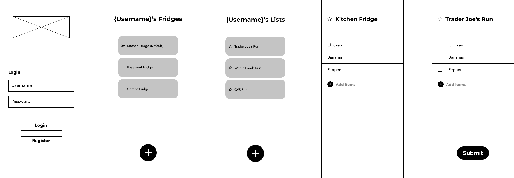
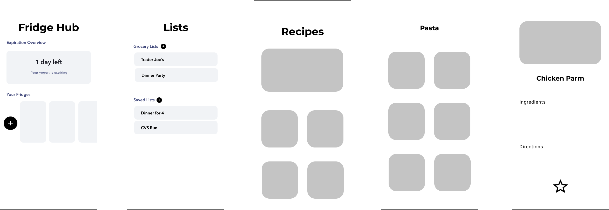
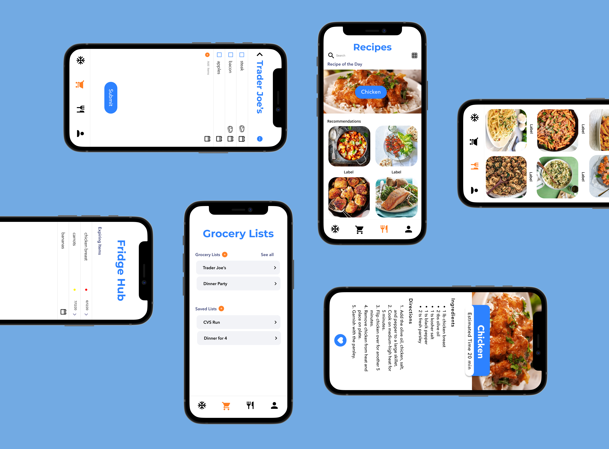

Reinventing the way grocery shopping and cooking are handled through an all-emcompassing fridge hub app.
Fridgloo is an app designed to help users maintain the current content of their fridges and pantries in an all-in-one tool containing their personal refrigerator, grocery list, and recipe cookbook. Users can manually add items into their fridges or use the grocery list feature to directly add all they purchased on their grocery run. Based on the ingredients in their fridge, especially the ones about to expire, Fridgloo can recommend recipes in order to help reduce waste, encourage exploration of new recipes, and track food consumption.
Have you ever come back from grocery shopping and realized you had forgotten to buy more bananas? Or went to pour yourself a bowl of cereal only to see that the milk has spoiled? With so many other priorities and distractions in daily life, it can be difficult to stay on top of groceries. Busy professionals and students may find themselves forgetting what they have in the fridge leading to duplicate buys, food waste, and unnecessary money spent. This can be very frustrating due to the fact that the various aspects of food management are not in one central platform; the fridge, handwritten grocery lists, recipes from cookbooks or online, are all separate entities. This creates disconnect and inefficiency when they should be working in tandem.
My main focus was working as a UX/UI Designer and Frontend Developer.
Create an efficient tool to help users keep track of their grocery shopping and food management.
In order to get a better understanding of the purpose behind our app and its potential demand, we began discussing our own troubles with food management. To bolster our opinions further, we also did research on data behind average food consumption and waste to see if Fridgloo could really make an impact on this issue.
As college students ourselves, we know firsthand the struggle of balancing life and school. Especially as upperclassmen who have our own kitchens, cooking our own meals becomes default. And yet, prioritizing school work compromises the time we can put into something even as important as eating. Thus, we need quick and easy accessbility when it comes to meal prep and execution. The constant worrying of the next exam, work shift, club meeting, and so on can also cause the mental note of the bread going bad in two days to completely slip from mind. Specifically for me, I have had one too many disappointing encounters of opening the fridge to expired produce and spoiled leftovers. Therefore, our busy work schedules could use the aid of something like Fridgloo.
According to the U.S. Department of Agriculture, food waste is estimated at 35% of the food supply which occurs for many reasons such as spoilage and overbuying. Approximately every year 219 pounds of food per person is wasted, making the average household throw out about $1,600 in food per year. Consumers contribute to a large portion of food loss when expiration dates are not carefully considered and they buy or cook more than they need which all leads to the disposal of these foods. These were issues that we had taken into account and with the data backing up our stance, it is clear how our app can act as a minor solution to a major problem. Fridgloo can help reduce spoilage waste by keeping track of the expiration dates of users' groceries and reminding them when these items are about to expire so that they can avoid being swept to the trash. It can also help with portion control and saving money as following recipes provide a more accurate representation of how much to exactly buy and use at a time as well as giving people inspiration on what they can cook based on ingredients they already have in their fridge.
Our goal was to create an app that is accessible to everyone that not only incorporated all the necessary features, but also one that prioritized usability. An issue we recognized was the huge disconnect between the various tools utilized when it comes to this particular chore. We want users to feel more in control of their groceries by providing them with an easy to use, all-encompassing platform.
We focused heavily on the brainstorming process as we knew that this app would contain various distinct major features that would need to be seamlessly connected. Collectively we formulated a simple outline of the framework we wanted our app to be based upon. We concentrated on the most basic purposes and functionalities we wanted to achieve before discussing the more complex features as they would be built off this foundation later on.
- food management system
- idea of a "fridge hub"
- encompassing all features onto one platform
- aim to help make groceries easier
- Provide name, email, password
- Form verification
- database needed to store account information
- SSO authorization?
- users can add items into fridges
- can click into each to view what items are inside
- can edit what items are in fridge to be up to date
- create as many lists as user needs
- lists are editable at any time
- can be checked off while shopping
- can manually add expiration date when adding to fridge
- alert (push notification)
- banner on top of ingredients for warning
- lookup via keyword / ingredient matching
- recommend recipe based on items
- add own receipes and share?
- storing username and password
- associated fridge and contents
- created grocery lists and contents
- database of receipes: create or API?
- based on food item keyword search
- the more keywords a receipe contains, the more priority
- sort into catergories based on tags?
As Fridgloo has multiple larger main features, this can complicate the overall user experience. As ease of use is integral to our model, our focus was on identifying these potential roadblocks that may arise and the ways in which to tackle these issues.
To kickstart our design process, we designed a skeleton of some of the main screens of Fridgloo. We decided to begin with the fridge hub and lists portions as they were the most important aspects of the product.
Only taking into account the most basic funtionalities that these features required, we wireframed these working parts. As both the fridge hub and lists are capable of having more than one main component, we wanted these screens to clearly display all the fridges and lists a user may have as well as show directly that they may add as many as they need. We carried this same idea over to the screens that show the content of each fridge and list by allowing users to add onto these lists at any time even after initially creating them. The submit button in the list screen allows users to submit those items into their fridge for easy updating purposes.
We wanted to improve upon the look and usablility of the features on the fridge hub portion of the screens as they were tooo bulky and after more design iterations, we came up with our final design. As the expiring food reminder was a vital detail, we decided to put it at the top of the screen to enhance its significance. We also thought that making the different fridges resemble actual fridges would be a fun additional detail. After these finalizations, we moved onto the recipe feature. This portion of the app was one we wanted to keep as simple as possible since it would be containing a lot of content and infomation. As recipes contain both pictures and thorough instructions, we did not want to take away from this with distracting over the top design. Through more iterations and refining the interactivity and logical flow of our app, the MVP for Fridgloo was created.
This project is comprised of many functionalities which proved to be a much bigger task than we had originally conceptualized. The purpose of our app is to dissapate the disconnect and complications by bringing everything together onto one platform; therefore, streamlined and straightforward interactions between features was extremely significant for us to achieve as this was the foundational priciples we had when writing our problem statement. A next step that could be taken is to conduct user testing to see what more can be enhanced and produce additional advanced features such as fridge sharebility within a household so that updates can occur in parallel.